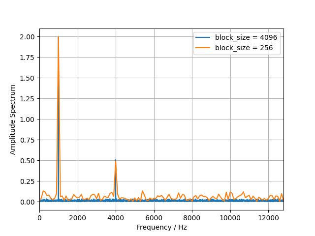

Note
Go to the end to download the full example code.
Fast Fourier Transform (FFT) of multichannel time data.#
Demonstrates how to calculate the blockwise FFT and spectrogram of the signal.
Imports
import acoular as ac
import numpy as np
We define two sine wave signals with different frequencies (1000 Hz and 4000 Hz) and a noise signal. Then, the signals are calculated and added together.
sample_freq = 25600
t_in_s = 30.0
num_samples = int(sample_freq * t_in_s)
sine1 = ac.SineGenerator(sample_freq=sample_freq, num_samples=num_samples, freq=1000, amplitude=2.0)
sine2 = ac.SineGenerator(sample_freq=sample_freq, num_samples=num_samples, freq=4000, amplitude=0.5)
noise = ac.WNoiseGenerator(sample_freq=sample_freq, num_samples=num_samples, rms=0.5)
mixed_signal = (sine1.signal() + sine2.signal() + noise.signal())[:, np.newaxis]
The mixed signal is then used to create a TimeSamples object.
ts = ac.TimeSamples(data=mixed_signal, sample_freq=sample_freq)
print(ts.num_samples, ts.num_channels)
768000 1
Create a spectrogram of the signal#
Therefore we want to process the FFT spectra of the signal blockwise. To do so, we use the
RFFT class, which calculates the FFT spectra of the signal blockwise.
block_size = 512
# results in the amplitude spectra
fft = ac.RFFT(source=ts, block_size=block_size, window='Rectangular')
spec = next(fft.result(num=1))[0] # return a single snapshot
time_block = next(ts.result(num=block_size))[:, 0]
print("Parseval's theorem:")
print('signal energy in time domain', np.round(np.sum(time_block**2)))
print(
'signal energy in frequency domain (single-sided)',
np.round((1 / block_size * np.sum(spec * spec.conjugate())).real),
)
# It can be seen, that the energy is not preserved when using the default 'none' scaling. Therefore,
# we set the scaling to 'energy' to compensate for the energy loss due to truncation to a
# single-sided spectrum.
fft.scaling = 'energy'
spec = next(fft.result(num=1))[0]
print(
'signal energy in frequency domain (single-sided) with energy scaling',
np.round((1 / block_size * np.sum(spec * spec.conjugate() / 2)).real),
)
fft.scaling = 'none'
ifft = ac.IRFFT(source=fft)
time_block_rec = next(ifft.result(num=block_size))[:, 0]
print('reconstructed signal energy in time domain', np.round(np.sum(time_block_rec**2)))
Parseval's theorem:
signal energy in time domain 1231.0
signal energy in frequency domain (single-sided) 616.0
signal energy in frequency domain (single-sided) with energy scaling 1231.0
reconstructed signal energy in time domain 1231.0
Plot the spectrogram (time-frequency representation) of the signal. Here, we plot the amplitude
spectra for each time block. Therefore, we normalize the fft spectra by the number of samples in
the block by setting the scaling to 'amplitude'. It can be varified from the
spectrogram plot that the amplitude of the tones are correctly represented.
import matplotlib.pyplot as plt
fft.scaling = 'amplitude'
spectrogram = ac.tools.return_result(fft)
# plot the power spectrogram
plt.figure()
plt.imshow(np.abs(spectrogram.T), origin='lower', aspect='auto', extent=(0, t_in_s, 0, sample_freq / 2), vmax=2.0)
plt.xlabel('Time / s')
plt.ylabel('Frequency / Hz')
plt.colorbar(label='Power Spectrum')
plt.show()
plt.figure()
for block_size in [4096, 256]:
fft.block_size = block_size
spec = next(fft.result(num=1))[0]
plt.plot(fft.freqs, np.abs(spec), label=f'block_size = {block_size}')
plt.xlim(0, sample_freq / 2)
plt.xlabel('Frequency / Hz')
plt.ylabel('Amplitude Spectrum')
plt.legend()
plt.grid()
plt.show()

- 
Create an averaged power spectral density of the signal#
To calculate the time averaged power spectral density of the signal, we use the
AutoPowerSpectra class.
fft.scaling = 'none'
ap = ac.AutoPowerSpectra(source=fft, scaling='psd') # results in the power spectrum
avg = ac.Average(source=ap, num_per_average=64) # results in the time averaged power spectrum
Plot the resulting power spectrum for different number of averages.
for block_size in [256, 1024]:
plt.figure()
fft.block_size = block_size
for navg in [1, 100]:
avg.num_per_average = navg
spectrum = next(avg.result(num=1))
levels = ac.L_p(spectrum)
plt.plot(fft.freqs, levels[0], label=f'navg = {navg}, block_size = {block_size}')
plt.xlabel('Frequency / Hz')
plt.ylabel('PSD / dB')
plt.grid()
plt.legend()
plt.semilogx()
plt.show()
Create a cross-spectral matrix for multichannel signals#
To calculate the cross-spectral matrix of the signal, we use the
CrossPowerSpectra class. First, we create a TimeSamples object with two
channels. Then, we calculate the cross-spectral matrix of the signal blockwise. We choose a
normalization method of ‘psd’ (Power Spectral Density) for the cross-spectral matrix.
fft.block_size = 128
mixed_signal = noise.signal()[:, np.newaxis]
ts = ac.TimeSamples(data=np.concatenate([mixed_signal, 0.5 * mixed_signal], axis=1), sample_freq=sample_freq)
# compare with PowerSpectra
ps1 = ac.PowerSpectra(source=ts, block_size=fft.block_size, cached=False)
csm_comp = ps1.csm[:, :, :]
fft.source = ts # we need to change the source of the fft object to the new TimeSamples object
ps = ac.CrossPowerSpectra(source=fft)
avg = ac.Average(source=ps, num_per_average=int(ps1.num_blocks))
csm = next(avg.result(num=1))
# reshape the cross-spectral matrix to a 3D array of shape (numfreq, num_channels, num_channels)
csm = csm.reshape(fft.num_freqs, ts.num_channels, ts.num_channels)
Plot both spectra
plt.figure()
colors = ['r', 'b']
for i in range(ts.num_channels):
c = colors[i]
auto_pow_spectrum = ac.L_p(csm_comp[:, i, i].real)
plt.plot(fft.freqs, auto_pow_spectrum, label=f'PowerSpectra ({i})', color=c, linestyle='-', linewidth=0.8)
auto_pow_spectrum = ac.L_p(csm[:, i, i].real)
plt.plot(fft.freqs, auto_pow_spectrum, label=f'CrossPowerSpectra ({i})', color=c, linestyle='--')
plt.xlabel('Frequency / Hz')
plt.ylabel('Power Spectrum / dB')
plt.grid()
plt.legend()
plt.semilogx()
plt.show()
Total running time of the script: (0 minutes 1.820 seconds)